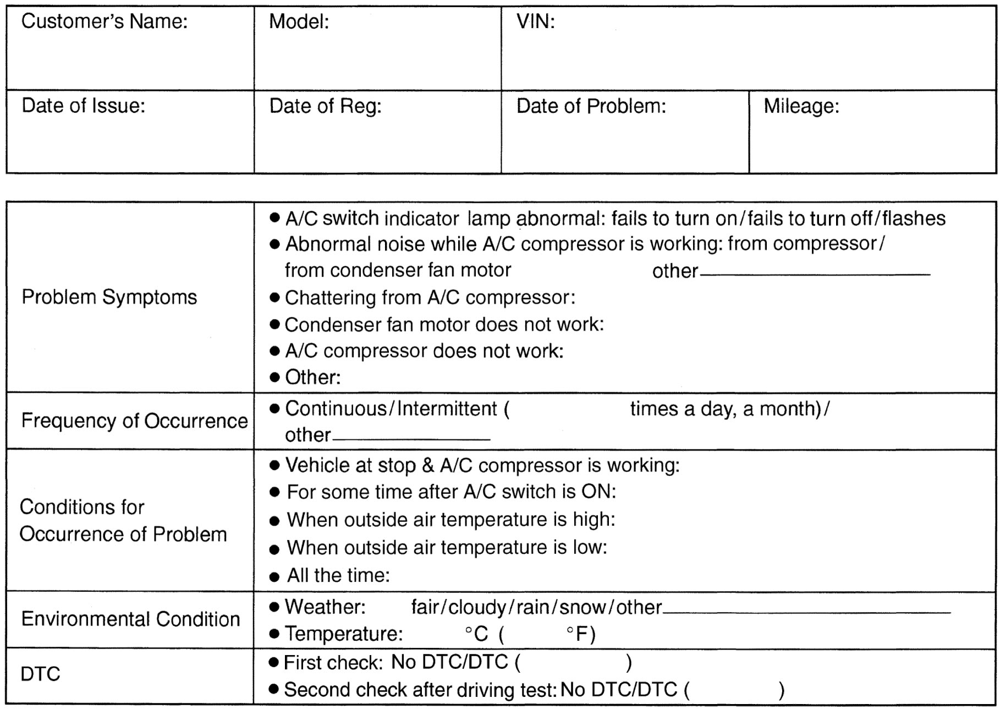

7B
| Air Conditioning System Check |
| Step | Action | Yes | No |
|---|---|---|---|
| 1 |
Customer complaint analysis
1)Perform Step 1. Customer complaint analysis.
Was customer complaint analysis performed?
|
Go to Step 2.
|
Perform customer complaint analysis.
|
| 2 |
Visual inspection
1)Perform Step 2. Visual inspection.
Is there any faulty condition?
|
Repair or replace defective part.
|
Go to Step 3.
|
| 3 |
A/C system performance inspection
1)Perform Step 3. A/C system performance inspection.
Is there any faulty condition?
|
Repair or replace defective part, and then go to Step 6.
|
Go to Step 4.
|
| 4 |
A/C system symptom diagnosis
1)Check and repair A/C system.
Is there any faulty condition?
|
Repair or replace defective part, and then go to Step 6.
|
Go to Step 5.
|
| 5 |
Check for intermittent problem
1)Check for intermittent problems.
Is there any faulty condition?
|
Repair or replace defective part, and then go to Step 6.
|
Go to Step 6.
|
| 6 |
Final confirmation test
1)Perform Step 6. Final confirmation test.
Is there any malfunction?
|
Go to Step 3.
|
End.
|
Description for Each Step
Step 1. Customer complaint analysis
Talk to customer, and then record details of the problem.
NOTE:
The form is a standard sample. It should be modified according to conditions characteristic of each market.
Customer questionnaire form (Example)

 "Expand image")
Step 2. Visual inspection
As a preliminary step, perform visual check of the items that support proper function of the air conditioning system referring to Visual Inspection:Manual Type.
Step 3. A/C system performance inspection
Check A/C system suspected to be a possible cause referring to A/C System Performance Inspection:Manual Type.
Step 4. A/C system symptom diagnosis
Check any part or system suspected to be a possible cause referring to A/C System Symptom Diagnosis:Manual Type.
Step 5. Check for intermittent problem
Check parts that are prone to cause intermittent problem (e.g. wire harness, connector, etc.), referring to Intermittent Connection and Poor Contact Inspection.
Step 6. Final confirmation test
Check that trouble symptom has disappeared and A/C system is free from abnormal conditions.